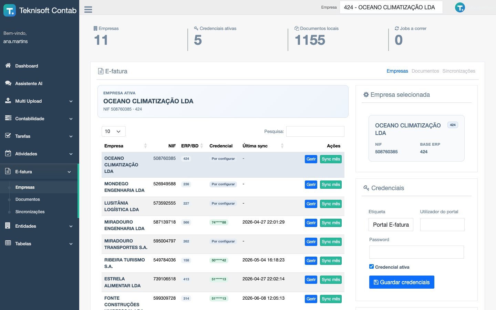
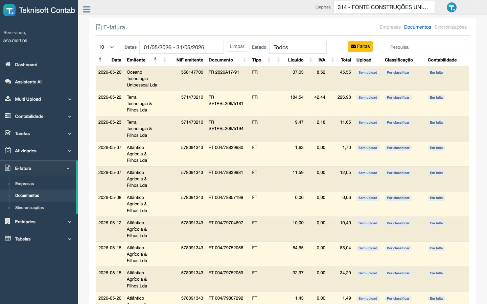
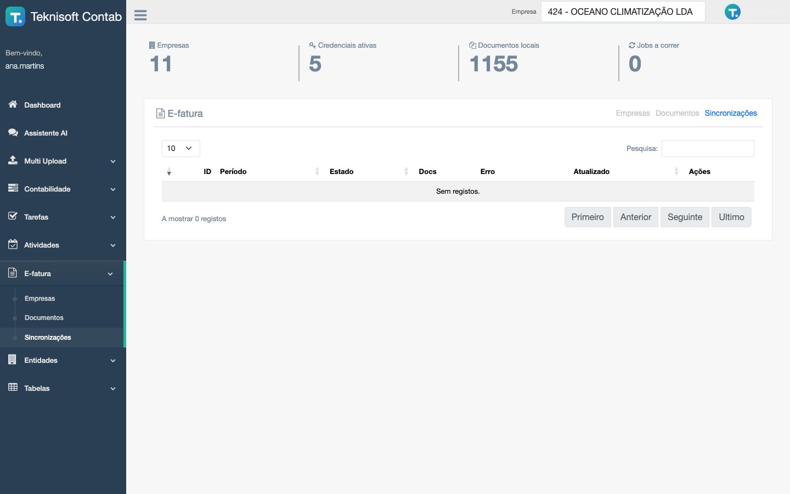

E-fatura
Sincroniza os documentos que os fornecedores comunicaram à AT em nome de cada cliente, para saber o que falta na pasta, confirmar o que foi lido e pedir os documentos em falta.
Empresas e credenciais
E-fatura > Empresas. Para cada cliente, guarde as credenciais do Portal das Finanças (NIF ou NIF/subutilizador e senha). A senha fica cifrada e é reutilizada pelo Envio de SAF-T.

Permissões: CTB E-fatura - Aceder para consultar, Sincronizar para lançar sincronizações e Gerir credenciais para editar as senhas.
Documentos
E-fatura > Documentos. Lista os documentos do cliente escolhido no topo (Empresa) no intervalo de datas pedido (o calendário mostra dois meses lado a lado).

| Coluna | Significado |
|---|---|
| Data, Emitente, NIF, Documento, Tipo, Líquido, IVA, Total | Dados comunicados à AT pelo fornecedor. |
| Upload | Se o PDF correspondente já foi carregado (emparelhamento automático). |
| Classificação | Se já está classificado. |
| Contabilidade | Se já foi lançado no ERP. |
Prepara um e-mail ao cliente com a lista dos documentos que existem no E-fatura mas ainda não chegaram ao gabinete. Elimina o vai-e-vem de pedidos avulsos.
Sincronizações
E-fatura > Sincronizações. Histórico das sincronizações (manuais ou agendadas): período, documentos novos e atualizados, erros.

A sincronização corre em segundo plano; pode continuar a trabalhar enquanto decorre. Os ficheiros de trabalho são limpos automaticamente segundo a retenção definida em Módulos > E-fatura.